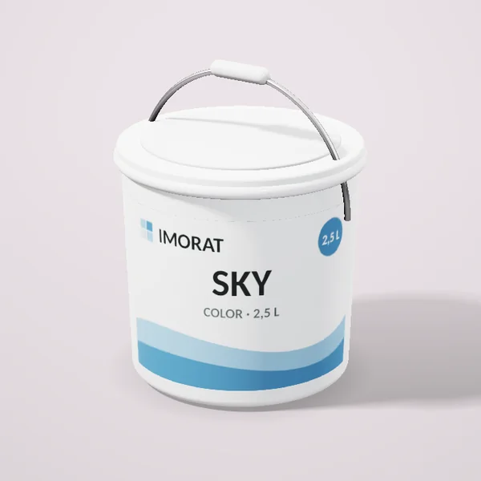
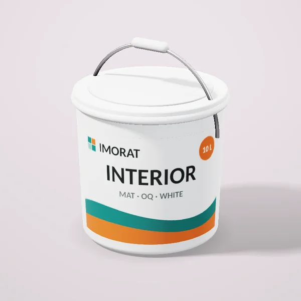
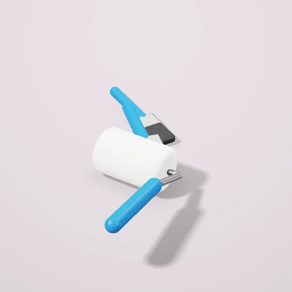
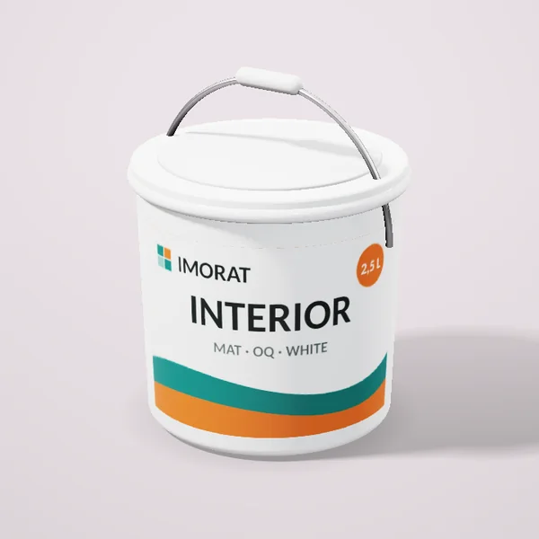
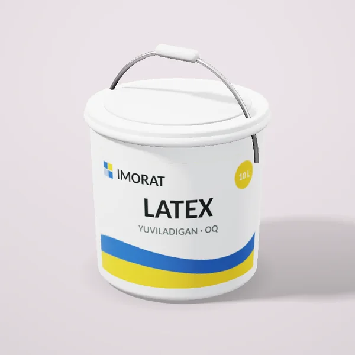
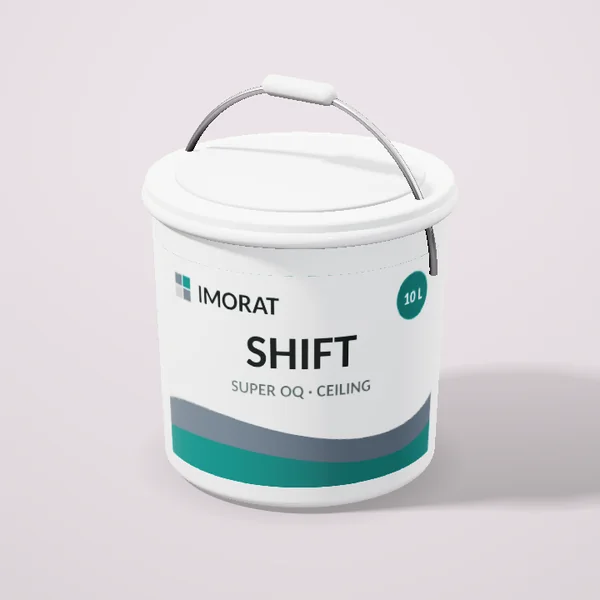
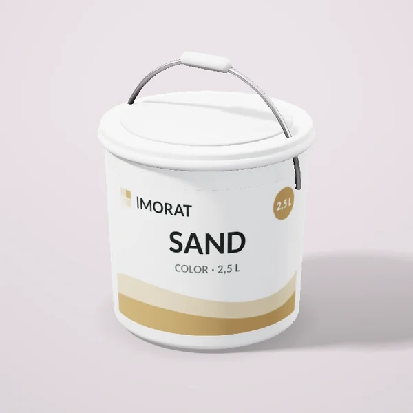
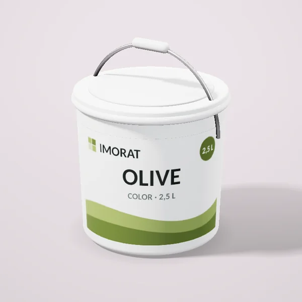
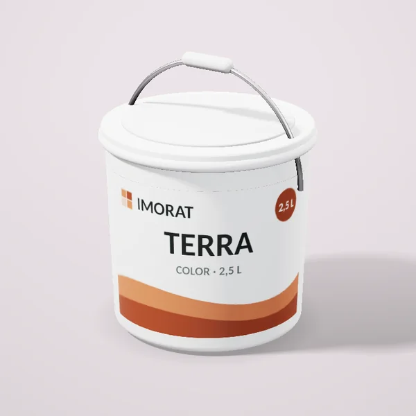

Краска интерьерная «Небо», 2,5 л

от 130 000 сум / ведро 10 л
Для стен и потолков в жилых комнатах. Наносится на загрунтованную поверхность в два слоя, расход около 0,12 л/м² на слой.
- Единица
- ведро 10 л
- Вес
- 3.5 kg
- Страна
- Россия
Доставка Яндекс по Ташкенту: курьер до 15 кг, грузовое такси для тяжёлых заказов. Самовывоз из магазина бесплатно.
Цены в магазинах
| Магазин | Цена | Наличие |
|---|---|---|
| Bo‘yoq Uyi Яккасарайский | 130 000 сум | в наличии |
| Usta Market Чиланзарский | 135 000 сум | в наличии |
Похожие товары

Краска интерьерная белая матоваяот 307 000 сум
Набор валиков и кистейот 79 000 сум
Краска интерьерная белая, 2,5 лот 93 000 сум
Краска моющаяся латексная, 10 лот 418 500 сум
Краска для потолков, 10 лот 263 500 сум
Краска интерьерная «Песок», 2,5 лот 128 500 сум
Краска интерьерная «Оливка», 2,5 лот 126 000 сум
Краска интерьерная «Терракота», 2,5 лот 130 000 сум